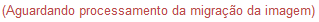

Corrigir artefatos
A correção dos artefatos listados na tela de Migração envolve tanto a parte dos dados propriamente dito como também a imagem do artefato.
A imagem de todos os artefatos devem ser verificados: Se a imagem estiver correta, deve-se confirmar. Caso contrário, alterá-la. E se não houver imagem, inserir imagem.
Os artefatos ficam listados na tela Migração até que dados e imagens estejam validados.
- Apresentar a tela Migração

Tela de Migração
 Conhecendo a tela de Migração!!
Conhecendo a tela de Migração!!
- A tela de Migração informa (na barra superior azul) que primeiramente devem ser corrigidos os artefatos vinculados e por último o artefato principal. Dessa forma, a ação de correção (Ícone Corrigir) do artefato principal ficará desabilitada até que possa ser corrigido.
Barra de Mensagem - Texto informativo
- A primeira coluna da grid, Processo/Documento, exibe o número dos artefatos e são listados de maneira hierárquica:
Tela de Migração - Coluna Processo/Documento
- Ao lado do número do documento ou processo é apresentada a seguinte mensagem:

Essa mensagem indica que o sistema está processando a migração da imagem do artefato e logo que estiver finalizado, o sistema envia um email com um dos avisos abaixo:

- A segunda coluna da grid exibe a Situação de cada artefato. Primeiramente o sistema verifica se o artefato está com inconsistência de dados. Em caso afirmativo, será apresentado o status . Logo após a correção dos dados, a imagem deve ser validada, ou seja, deve-se confirmar ou alterar a imagem. E no caso de não haver imagem, deve-se inserir uma imagem. O sistema indicará o status das imagens da seguinte forma: e . Ao final, quando o sistema verificar que tanto os dados quanto a imagem estão corretos, o ícone vai ser apresentado na coluna Situação. Lembrando que no caso do artefato principal, a ação de correção ficará indisponível até que todos os artefatos vinculados a ele estejam corrigidos. Sendo assim, se ele estiver com inconsistência de dados, o seu status é apresentado na cor cinza, indicando que está desabilitado até a correção de todos os artefatos vinculados.
Tela de Migração - Coluna Situação
- Corrigir a inconsistência de dados
Para corrigir a inconsistência dos dados de um artefato, clique no ícone  disponível na coluna Ações da tela Migração:
disponível na coluna Ações da tela Migração:
Tela Migração - clicando no ícone Corrigir dados
Após clicar no ícone a tela Corrigir Documento é apresentada (Veja Nota1):
Tela Corrigir Documento
Corrigindo o artefato!!
- Observe todas as abas da tela Corrigir Documento para verificar quais dados precisam ser alterados, ajustados ou incluídos (Veja Nota 2):
Tela Corrigir Documento
- Para facilitar a correção o sistema apresenta abaixo dos campos, onde houve a inconsistência durante a migração, uma barra azul informando o dado que esse artefato apresentava no sistema anterior:
- Após preencher todos os campos do artefato, realizando todas as alterações e ajustes necessários, clique no botão . O sistema apresentará uma mensagem de sucesso:
IMPORTANTE!!
 Nota 1:
Nota 1:
A tela Corrigir Documento é igual a tela Cadatrar Documento, ou seja, possui os mesmos campos, abas e botões. Portanto, se houver alguma dúvida de preenchimento, consulte o link Cadastrar Documento. O mesmo ocorre quando se tratar de correção de Processo. Nesse caso, consulte o link Cadatrar Processo.
Nota 2:
Os campos obrigatórios são indicados pelo sinal de asterisco (*) na cor verde ao lado do nome. Quando algum ou nenhum campo obrigatório for preenchido, o sistema apresenta uma mensagem de erro: "Campos de preenchimento obrigatório não foram preenchidos.".
Comportamento da tela Corrigir Documento - após clicar no botão Próxima sem preencher os campos obrigatórios.
Created with the Personal Edition of HelpNDoc: Free EBook and documentation generator